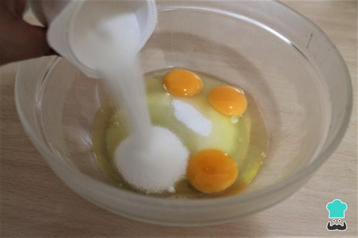
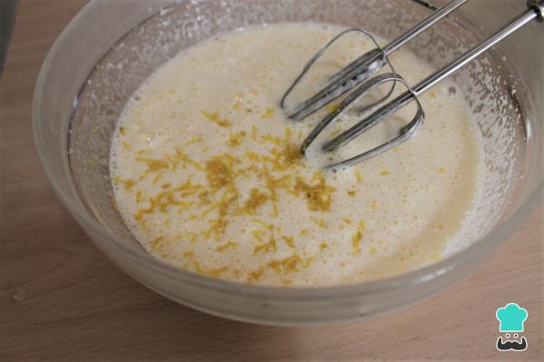
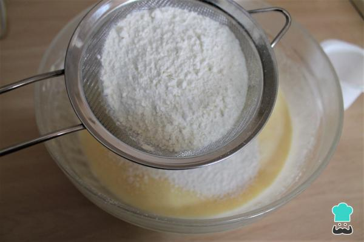
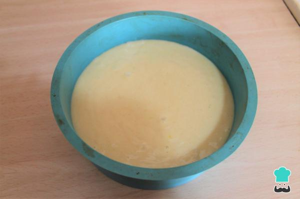

Para la receta del bizcocho 1,2,3 vamos a utilizar el envase del yogur como medida para el resto de los ingredientes. Vacía el yogur en un bol pequeño para usarlo más tarde y limpia el envase. Añade en un bol dos medidas del vasito con azúcar. Además, incorpora los tres huevos y bate con las varillas de una batidora eléctrica hasta que queden blanquecinos y espumosos.

Incorpora una medida de yogur de aceite de girasol y el yogur de limón que tienes reservado. Ralla el limón y añade también su ralladura. Sigue batiendo con las varillas eléctricas.

Precalienta el horno a 180 ºC. Engrasa un molde redondo de unos 22-24 cm y vierte la masa del bizcocho 1, 2, 3 en él. Hornea a 180º C con calor arriba y abajo durante 40 minutos (el tiempo es orientativo, dependerá de vuestro horno). Pon la bandeja del horno en la parte baja, y si ves que el bizcocho empieza a tostarse antes de tiempo, cubre con un papel de aluminio para que no se dore más.

Una vez cocido, saca el bizcocho del molde y deja enfriar en una rejilla. Si te sobra de un día para otro, guarda el bizcocho envuelto en papel film transparente. Señalamos que también lo puedes congelar.
Espero que te haya gustado la receta.